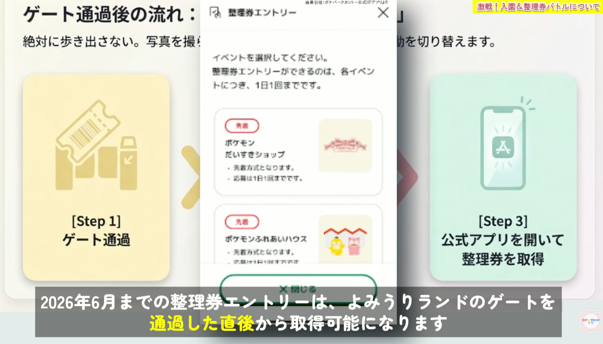
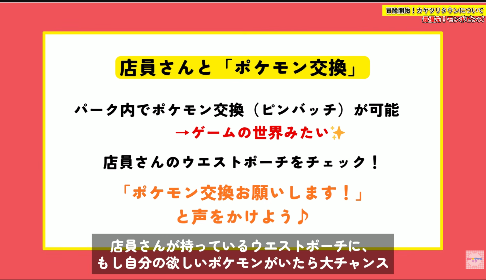
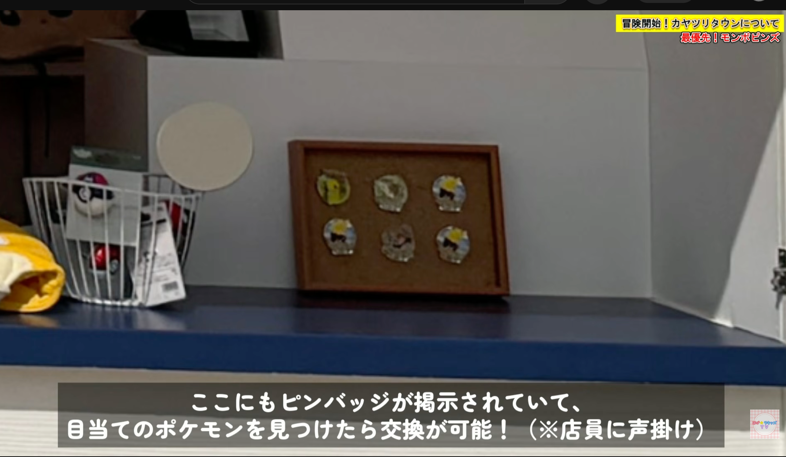
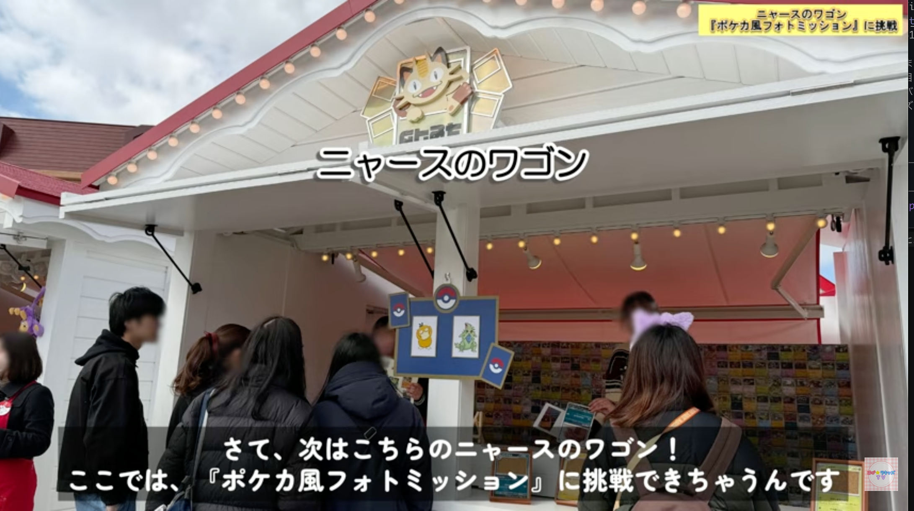
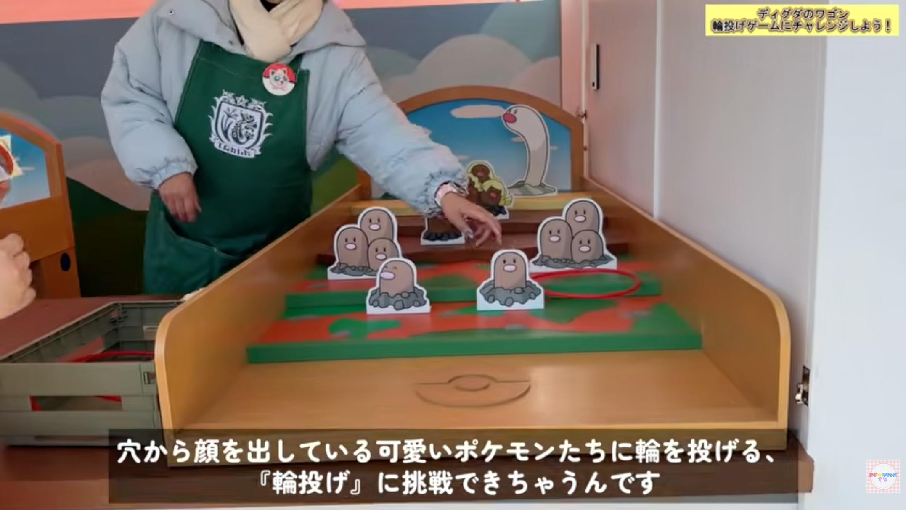

基本情報
| 項目 | 内容 |
|---|---|
| 訪問日 | 2026年7月以降 |
| チケット | トレーナーズパス（フォレスト+タウン両エリア対応） |
| 営業時間 | 12:00〜20:00（2026年7月〜・公式発表） |
| 整理券エントリー開始 | よみうりランド入園後、かつ12:00以降 |
| フォレスト入場 | 予約時間帯（トレーナーズパスのチケットで指定） |
| 会場 | よみうりランド遊園地内（東京都稲城市） |
| キャッシュレス | 現金一切不可。カード・スマホ決済のみ |
| パレード「ピカブイバブルカーニバル」 | 1日2回（具体的な時間は営業時間変更に伴い変わっている可能性あり。来園前に公式アプリで確認） |
12:00開園・12:00からの整理券エントリーのため、早朝から並んでも意味がない。11:45頃の到着で十分。
アクセス
京王よみうりランド駅からよみうりランドへ：バス（読01系統）約5分 or ゴンドラ「スカイシャトル」往復500円/人（早い時間は未運行の場合あり → バス推奨）
入園ゲートの注意： よみうりランドのゲート（スカイゲート）には2列ある。左側がポケパーク カントー専用列、右側が通常列。 必ず左側に並ぶ。

赤＝ポケパーク列（左）、青＝よみうりランド列（右）。念のため案内看板をしっかり確認して正しく並ぶこと。
入園後 → ポケパーク カントーへの動き方
- ゲートを通過したら左手のエスカレーターを降りる
- 案内看板が少ないため、わからなければスタッフや他の来場者に確認
- 徒歩約10分でポケパーク カントーのエントランスに到着
エントランス広場の配置
[ カヤツリタウン（正面） ]
左：ポケモンフォレスト 右：ポケモンだいすきショップ
↑ エントランス（ここで立ち止まって整理券エントリー）
到着したらすぐに動かず、この場で整理券をエントリーしてから各エリアへ向かう。
ポケパーク入口は激混み（チケットなしでも入れるため）。入口での写真撮影は後回しでOK → スルーしてカヤツリタウンへ直行。
当日の流れ
| 時刻目安 | 行動 | ポイント |
|---|---|---|
| 11:45頃 | よみうりランド到着 → ポケパーク カントー専用列に並ぶ | 開園に合わせて並べば十分 |
| 12:00 | 入園 → 整理券を即エントリー | だいすきショップ・ふれあいハウス（先着）／ピカピカスパーク（抽選）を大人で分担 |
| 12:00〜 | カヤツリタウン探索（トレーナーズマーケット・ランチ・ワゴン類など） | 整理券の待ち時間を有効活用 |
| 予約時間帯 | ポケモンフォレスト入場 | 再入場不可。入場前にトイレを済ませる（エリア内トイレなし） |
| （時間は要確認） | パレード「ピカブイバブルカーニバル」（1日2回） | 噴水周りの鑑賞エリアは段階的に解放。直前まで待って正面（ポケモンセンター横）を狙うのもアリ |
| 整理券の時間に合わせて | ポケモンだいすきショップ | 会計1回限り。事前に欲しいものリストを作る |
| 20:00 | 閉園 |
カヤツリタウン 施設一覧
| 施設 | 種別 | メモ |
|---|---|---|
| ポケモンセンター | 体験 | ぬいぐるみ回復体験。ショーの時間と被らないよう注意 |
| フレンドリィショップ | 飲食・購入 | ゲームアイテム再現グッズ購入可。裏にポケパーク限定マンホールあり |
| カヤツリジム | アトラクション | ピカピカスパーク開催（整理券抽選）。たまに食事スペースとして解放（アプリ通知あり） |
| ピカピカパラダイス | アトラクション | 1,200円/人 |
| ブイブイヴォヤージュ | アトラクション | 1,200円/人 |
| ポケモンふれあいハウス | 体験 | 整理券（先着）。8匹から3匹が登場・うち1体と触れ合い |
| ポケモントレーナーズマーケット | ショップ | モンスターボール入りピンズはここ。スタッフとの交換も可 |
| デカヌチャンワゴン | ワゴン | 名入れキーホルダー（ピカチュウ・イーブイ各1,800円）。先に注文→後で受け取りがベスト |
| ニャースワゴン | ワゴン | ポケカ風フォトフレーム無料配布。日替わりポケモン撮影ミッション→ステッカーもらえる |
| ディグダワゴン | ミニゲーム | 無料。1人1本・何回でもOK。成功/失敗でそれぞれステッカーもらえる |
| インフォメーションワゴン | 案内 | — |
| カヤツリタウン エグジット | 出口 | タウン→だいすきショップへの行き来は再入場スタンプが必要 |
整理券について
よみうりランド入園後、かつ12:00以降から整理券エントリー可能（公式情報）。 ゲート通過後、エントリー開始まで数分かかる場合あり。

整理券対象イベント（公式）
| 施設 | 方式 | 応募制限 |
|---|---|---|
| ポケモンふれあいハウス | 先着 | 1日1回 |
| ポケモンだいすきショップ | 先着 | 1日1回 |
| ピカピカスパーク（カヤツリジム ショー） | 抽選 | 1種類につき1日1回 |
フォレストの予約時間帯とパレードの時間を避けるように、整理券の時間帯を選ぶと動きやすい（各回の詳細時間は公式アプリで確認）。
事前準備
- 家族のチケットが別々に購入されている場合、アプリでグループ作成＋チケット共有を訪問前日までに済ませておく（代表者が家族全員分の整理券を一括取得するために必要）
- アプリはログイン済み状態にしておく
フード・ランチガイド
店舗一覧
| 店舗 | おすすめメニュー | 特徴 |
|---|---|---|
| ピカチュウのおにぎり屋 | おにぎりセット（トレー付き）・豚汁 | 子どもが喜ぶ見た目 |
| チルタリスの羽休みキッチン | バケットサンド・ワッフルサンド・デミグラススープ | 本格洋食。「ほうれん草のポテト」人気 |
| イーブイカフェ | Vイズのラテアート・アイスバー・クリームパン | 写真映え。軽食向き |
| フレンドリィショップ | 御三家スペシャルドリンク・おいしいみず・サイコソーダ・ミックスオレ・アイシングクッキー・オリジナルペットボトルドリンク | ゲームアイテム再現グッズが買える唯一の店 |
| カビゴンのポップコーン | カビゴンポップコーンバケット（4,500円） | 笛付き・お腹ぷにぷに。精巧な作り |
ランチのタイミング
- 子ども向け食べ物が少ないため、パンなどを持参しておくと安心
- 12〜14時はピーク。座席確保が非常に困難
- 座れる場所：フレンドリィショップ裏・ポケモンセンター裏に一部テーブルあり（フレンドリィショップ裏にはポケパーク限定マンホールも）
- カヤツリタウンはスタンプで再入場可。よみうりランド側のレストランで食べてから入場も選択肢
- カヤツリジムが解放されたタイミングで食事できる場合あり（アプリ通知が来る）
グッズ・お土産ガイド
| アイテム | 価格 | 場所 | メモ |
|---|---|---|---|
| モンスターボール入りピンバッジ | 1,200円/個 | ポケモントレーナーズマーケット | 151種ランダム。10個でプレミアボール付き。スタッフ・他ゲストとの交換も楽しい |
| 名前入りキーホルダー | 1,800円/個 | デカヌチャンワゴン | ピカチュウ・イーブイ2種。英数字8文字以内で刻印。制作に時間がかかるため先に注文→後で受け取り |
| カビゴンのポップコーンバケット | 4,500円 | カビゴンのポップコーン | 笛付き・お腹ぷにぷに |
| アイシングクッキー（キズぐすり等） | — | フレンドリィショップ | 整理券不要 |
| ゲーム内ドリンク | — | フレンドリィショップ | おいしいみず・サイコソーダ・ミックスオレ |
| カチューシャ・ハット | — | ワゴン | 大好きショップ売り切れ時はワゴンを確認 |
| ワゴン限定紙袋 | — | ワゴン | 大好きショップとは異なる限定デザイン |
スタッフとのポケモン（ピンズ）交換
- スタッフのウエストポーチをチェックし「ポケモン交換お願いします」と声をかける
- お店のコルクボードにピンバッジが掲示されている場合も交換可


購入時の注意
- 大好きショップの会計は1回限り。追加購入不可。入店前に欲しいものリストを作る
- 多くの限定グッズに1人1点までの個数制限あり
- 大好きショップは先着整理券制（入園直後にエントリー）
- だいすきショップ→カヤツリタウンへの再入場はスタンプが必要
子連れ おすすめ体験・無料ミッション
- ポケモンセンター（回復体験）：ぬいぐるみを預ける → 回復装置に乗せてもらう → ゲームの「タ・タ・タ・タ・ラン♪」が流れて光の演出 → 「お預かりしたポケモンはみんな元気になりましたよ」で返却。ぬいぐるみをスタッフに見えるように持ち歩くと世界観に沿って話しかけてもらえる。ショーなどの予定と被らない隙間に入るのがベスト
- ストリートグリーティング：整理券不要・待ち時間なし。常時タウン内を散歩しているポケモンとハイタッチ・写真撮影が可能
- ニャースワゴン（無料）：ポケカ風フォトフレームを無料でもらえる。日替わりの対象ポケモンを撮影してスタッフに見せると、そのポケモンがデザインされたステッカーがもらえる

- ディグダワゴン（無料）：ミニゲームスポット。1人1本投げられ何回でも挑戦OK。成功・失敗それぞれ対応したステッカーがもらえる

- 研究ノート（フォレスト）：曜日・天候で出現ポケモンが変わる仕掛けあり
- バースデーシール：誕生日前後半年以内（実質年中）もらえる。パーク内スタッフまたはワゴン店員に申し出る。相棒ポケモン用ももらえる
- Pokémon HOMEメダル：スマホ版HOMEで現地限定来場メダルが受け取れる（全5種ランダム・無料）
- ポケモンGOコラボ：特別なポケモンが出現（詳細は次項「Pokémon GO コラボ」参照）
Pokémon GO コラボ
2026年2月5日から、『ポケパーク カントー』内で『Pokémon GO』のコラボコンテンツが楽しめる（公式発表）。 対象は『ポケパーク カントー』の開園時間中。ポケパーク単体の入場チケットとは別物で、Pokémon GOのプレイ自体に追加チケットは不要。
野生出現ポケモン
「ピカチュウ」「イーブイ」「コラッタ」「ポッポ」「フシギダネ」「ヒトカゲ」「ゼニガメ」「アンノーン（P）」「アンノーン（K）」が出現（いずれも色違いの可能性あり）。加えて「ポケモンフォレスト」「カヤツリタウン」の各エリアでも、それぞれ異なるポケモンと出会える。
フィールドリサーチ
園内のポケストップを回すと、限定の「フィールドリサーチ」タスクを入手できる。クリアすると園内限定のポケモンと出会える。
※タスクの入手は園内限定だが、タスクの消化は園外でもOK。
レイドバトル（4ヶ月ごとにローテーション・専用背景つき）
| ポケモン | 出現期間 |
|---|---|
| サンダー* | 2月・3月・4月・5月 |
| ファイヤー* | 6月・7月・8月・9月 |
| フリーザー* | 10月・11月・12月・1月 |
*色違い出現の可能性あり。1人1日1回まで参加可能。
訪問時期（2026年7月以降）は「ファイヤー」の出現期間（6〜9月）。
予算見積もり
| 項目 | 金額 | 備考 |
|---|---|---|
| チケット（トレーナーズパス） | 購入済み | — |
| アトラクション（2種 × 4人） | 〜9,600円 | 1,200円/回 |
| ゴンドラ往復（4人） | 2,000円 | 往復500円/人 ※時間帯によりバスかも |
| バス（往復） | 2,000円 | 片道250円/人 |
| ランチ・フード | 〜6,000円 | フード各種 |
| カビゴンポップコーンバケット | 4,500円 | 欲しければ |
| ピンバッジ | 応相談 | 10個まとめ買い = 12,000円 + プレミアボール |
| グッズ等 | 応相談 | 買えるグッズ一覧（YouTube） |
| コインロッカー | 現金必要 | よみうりランド側。小銭を用意 |
注意事項まとめ
| 項目 | 内容 |
|---|---|
| 入園ゲート | ポケパーク カントー専用列に並ぶ。通常列と間違えると大きなタイムロス |
| ポケパーク入口 | チケットなしでも入れるため激混み。入口写真は後回しでOK → スルーしてカヤツリタウンへ直行 |
| キャッシュレス | 完全キャッシュレス。コインロッカーのみ現金が必要な場合あり（小銭を用意） |
| 再入場 | カヤツリタウンはスタンプで再入場OK。フォレストとだいすきショップは再入場不可 |
| フォレスト トイレ | エリア内にトイレなし。入場前に必ず済ませる（特に子ども）。フォレスト入口「キル博士研究所」前に行くこと |
| フォレスト 装備 | 5歳未満入場不可。階段110段・急斜面。スニーカー必須。サンダル・ヒール厳禁 |
| ゴンドラ | 早い時間は未運行の場合あり。バス（読01系統）で代替可 |
| モバイルバッテリー | 終日アプリ使用＋QR決済＋写真で消耗激しい。1万mAh以上持参推奨（レンタルは午後に在庫切れ多い） |
| だいすきショップ | レジ待ち1〜1.5時間。会計1回限り。事前に欲しいものを全部決める |
| 食事の席 | 座席少なく昼時（12〜14時）は確保困難。フレンドリィショップ裏・ポケモンセンター裏に一部あり |
| ロッカー | ポケパーク内になし。よみうりランド側まで往復約20分。荷物は1回でまとめて |
| 無料Wi-Fi | 園内フリーWi-Fi あり。アプリ通信エラー防止のため接続しておく |
| バースデーシール | 誕生日前後半年（実質年中）もらえる。スタッフやワゴン店員に声をかける。相棒ポケモン用もあり |
アベ家のおすすめポイント
- スタッフとのポケモン（ピンズ）交換：交換頻度が高いので、良いポケモンを持っているスタッフがいないか頻繁にチェックしよう
- ピンバッジ：4人家族で10個買ったが、一ミリも後悔なし
- イーブイカフェ：パンは売り切れても、その後復活することがある
- 座れる場所：カヤツリジムの入口あたりのステージに座れる。敷物を持っていくと良い
- ポケモンセンター：遅めの時間に行くと10〜20分程度で入れる
- だいすきショップ（お土産屋さん）：夕方であればレジに並ばず購入できる。ただし売り切れの商品も複数あるため、お目当てのものをどうしても買いたい場合は早い時間の整理券を獲得する必要あり
- ストリートグリーティング：2匹のポケモン×3組が代わる代わるカヤツリジムの前に現れるので、写真撮影がしまくれる。十分楽しいので、ポケモンふれあいハウスを無理して整理券獲得しに行かなくても満足できる
To Do
最重要
- #1 公式アプリをインストールする
- #5 整理券エントリーの作戦を家族で共有する
- #12 整理券：どのイベントを狙うか決める
事前準備
- #2 キャッシュレス決済の準備
- #3 当日の服装・持ち物を準備する
- #6 グッズ・お土産の予算を決める
- #7 ポケモンのぬいぐるみを持参する（ポケモンセンター体験）
- #8 Pokémon HOMEアプリを準備する（現地限定メダル）
- #13 Pokémon GOアプリを準備する（コラボ限定ポケモン・レイド）
- #9 コインロッカー用の小銭を準備する
当日
- #10 フォレスト入場前に子どもたちをトイレに連れて行く（エリア内トイレなし）
情報ソース
- 攻略動画① — メイン攻略情報
- 攻略動画②（買えるグッズ一覧） — グッズ・お土産詳細